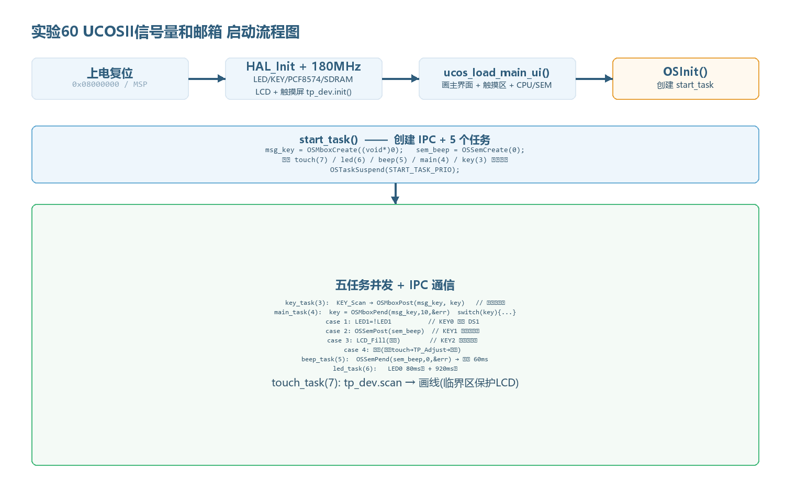
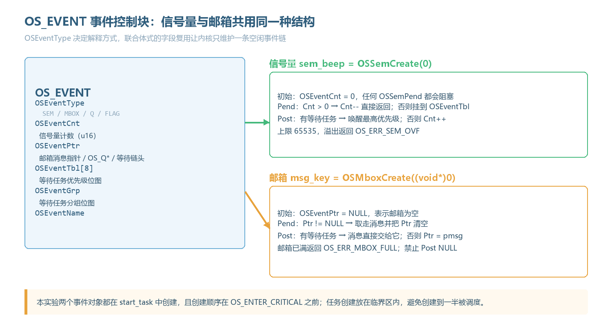
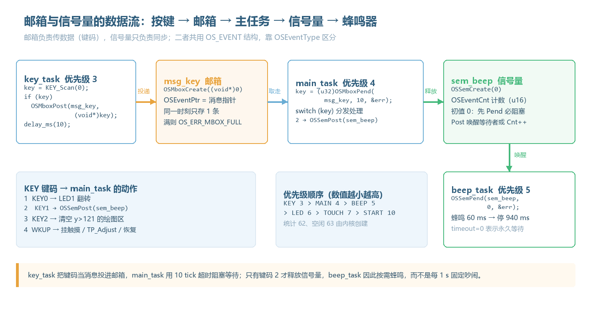
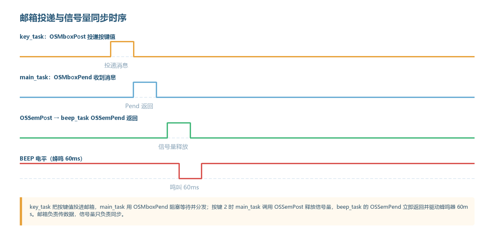

01 实验目标与硬件资源
按键不再直接操作任务：键码先进邮箱，主任务分发，蜂鸣器由信号量唤醒
实验 60 在任务调度与任务控制之上引入两种进程间通信（IPC）对象：邮箱负责搬运“按下了哪个键”，信号量负责“允许蜂鸣器响一次”。LCD 主界面同时显示信号量计数与 CPU 使用率，能直观看到内核事件在运行。
| 任务 | 优先级 | 栈 | 行为 |
|---|---|---|---|
| KEY | 3 | 128 OS_STK | 每 10 ms 扫描，键码非 0 就投进邮箱 |
| MAIN | 4 | 128 OS_STK | 10 tick 超时等邮箱，分发键码并刷新 LCD |
| BEEP | 5 | 128 OS_STK | 永久等信号量，拿到后响 60 ms、停 940 ms |
| LED | 6 | 128 OS_STK | 10 ms 计数，第 8 次灭、第 100 次亮 |
| TOUCH | 7 | 128 OS_STK | 扫描触摸并在 LCD 上画红线 |
| START | 10 | 128 OS_STK | 建 IPC、OSStatInit、建 5 个任务后挂起 |
| 按键 | 键码 | 主任务动作 | 现象 |
|---|---|---|---|
| KEY0 | 1 | LED1 = !LED1 | DS1 翻转 |
| KEY1 | 2 | OSSemPost(sem_beep) | 蜂鸣器响 60 ms，SEM 计数变化 |
| KEY2 | 3 | LCD_Fill(0,121,...) | 清空触摸绘图区 |
| WKUP | 4 | 挂起触摸 → TP_Adjust() → 恢复 | 触摸校准并重载主界面 |
/* HARDWARE/KEY/key.h：键码即邮箱消息，0 表示无键 */ #define KEY0_PRES 1 // DS1 翻转 #define KEY1_PRES 2 // 释放蜂鸣器信号量 #define KEY2_PRES 3 // 清除绘图区 #define WKUP_PRES 4 // 触摸校准
关键逻辑
- 键码是 1~4 的小整数，直接强转成
void *当邮箱消息，不需要额外缓冲区。 - KEY 任务优先级 3 最高，扫描到按键后立刻投递；MAIN 任务优先级 4 紧随其后被唤醒。
- BEEP 任务只在收到信号量时响，不再固定每 1 s 吵闹，体现“事件驱动”而不是“轮询驱动”。
- LCD 上
SEM:000显示的是sem_beep->OSEventCnt，不是任务计数。
02 工程结构与源码地图
相比实验59，新增 LCD、SDRAM、触摸驱动，内核部分只多了事件管理
| 文件 | 本页关注点 |
|---|---|
| USER/main.c | start_task、main_task、key_task、beep_task、led_task、touch_task |
| UCOSII/uCOS-II/Source/os_sem.c | OSSemCreate、OSSemPend、OSSemPost |
| UCOSII/uCOS-II/Source/os_mbox.c | OSMboxCreate、OSMboxPend、OSMboxPost |
| UCOSII/uCOS-II/Source/os_core.c | OS_EventTaskWait、OS_EventTaskRdy、OS_EventWaitListInit |
| UCOSII/uCOS-CONFIG/os_cfg.h | OS_MAX_EVENTS=20、OS_SEM_EN、OS_MBOX_EN |
| SYSTEM/delay/delay.c | delay_init、SysTick_Handler、delay_ms → OSTimeDly |
| CORE/startup_stm32f429xx.s | 向量表、Reset_Handler、FPU 使能 |
/* includes.h：应用只依赖内核公开头文件 */ #include <stdio.h> #include "ucos_ii.h" // OS_EVENT、OSInit、任务与事件 API #include "os_cpu.h" // OS_ENTER_CRITICAL、OS_TASK_SW #include "os_cfg.h" // OS_MAX_EVENTS、OS_SEM_EN、OS_MBOX_EN #include "app_cfg.h" // 应用级配置
关键逻辑
- 信号量与邮箱在同一个
os_event体系里实现，事件块总数由OS_MAX_EVENTS限制为 20。 - 本实验只创建 2 个事件块（
msg_key、sem_beep），远小于上限。 OSInit会把 20 个事件块串成空闲链，创建时从链头摘一个，删除时再挂回去。
03 启动流程总览
main 先点亮 LCD 主界面，再启动内核；任务装配全部放在 start_task

int main(void)
{
HAL_Init(); // HAL 基础、NVIC 分组、SysTick 初值
Stm32_Clock_Init(360, 25, 2, 8); // SYSCLK 180 MHz
delay_init(180); // 1 tick = 1 ms
uart_init(115200);
LED_Init();
KEY_Init();
PCF8574_Init(); // 蜂鸣器接在 I2C 扩展 IO
SDRAM_Init(); // LCD 显存
LCD_Init();
tp_dev.init(); // 触摸屏
ucos_load_main_ui(); // 先画静态界面，再开调度
OSInit(); // 空闲任务 63、统计任务 62、事件空闲链
OSTaskCreateExt((void (*)(void *))start_task, ... START_TASK_PRIO ...);
OSStart(); // 跳到 start_task，不返回
}
关键逻辑
- LCD 与触摸必须在
OSInit之前初始化，否则任务一跑起来就可能访问未配置的外设。 ucos_load_main_ui()只画标题、分隔线和固定文字，动态数值由main_task刷新。OSStart之后 MSP 留给中断，任务运行在 PSP 上。start_task的第一条业务语句是创建邮箱与信号量，第二条才是OSStatInit。
04 时钟与 SysTick 时基
1 ms 节拍既驱动延时，也驱动信号量的 0 tick 永久等待与 10 tick 超时
void delay_init(u8 SYSCLK)
{
#if SYSTEM_SUPPORT_OS
u32 reload;
#endif
HAL_SYSTICK_CLKSourceConfig(SYSTICK_CLKSOURCE_HCLK); // SysTick 时钟 = HCLK = 180 MHz
fac_us = SYSCLK; // 180，用于 delay_us 的普通延时
#if SYSTEM_SUPPORT_OS
reload = SYSCLK; // 180
reload *= 1000000 / delay_ostickspersec; // 180 × 1000 = 180000
fac_ms = 1000 / delay_ostickspersec; // 1 ms
SysTick->CTRL |= SysTick_CTRL_TICKINT_Msk;
SysTick->LOAD = reload; // 每 1 ms 中断一次
SysTick->CTRL |= SysTick_CTRL_ENABLE_Msk;
#endif
}
void SysTick_Handler(void)
{
HAL_IncTick();
if (delay_osrunning == 1) { // OSStart 之后才为 1
OSIntEnter(); // OSIntNesting++
OSTimeTick(); // 所有 OSTCBDly--，到 0 则置就绪
OSIntExit(); // 退出中断，必要时触发 PendSV
}
}
关键逻辑
delay_ostickspersec在 delay.c 中宏定义为OS_TICKS_PER_SEC，即 1000。reload = 180000小于 24 位计数器上限 16777215，不需要分频。OSSemPend(sem_beep, 0, &err)的 0 不是“立即返回”，而是“永不超时”。OSMboxPend(msg_key, 10, &err)最多等 10 ms，超时返回 NULL 并置OS_ERR_TIMEOUT。
本工程没有调用
OS_CPU_SysTickInit，而是在 delay_init 里做了等价配置：同样选择 HCLK、同样按 OS_TICKS_PER_SEC 计算重装值并打开 TICKINT。05 启动汇编与 C 运行时
向量表里的 PendSV/SysTick 是弱符号，链接时被内核与 delay.c 的强符号覆盖
__Vectors DCD __initial_sp ; 初始 MSP DCD Reset_Handler ; 复位入口 ... DCD PendSV_Handler ; os_cpu_a.asm 提供强符号 DCD SysTick_Handler ; delay.c 提供强符号 Reset_Handler PROC LDR R0, =SystemInit BLX R0 LDR.W R0, =0xE000ED88 ; CPACR LDR R1, [R0] ORR R1, R1, #(0xF << 20) ; 使能 CP10/CP11 STR R1, [R0] DSB ISB LDR R0, =__main BX R0 ; 拷贝 .data、清零 .bss、调用 main ENDP
关键逻辑
- 启动文件中的
PendSV_Handler与SysTick_Handler带[WEAK]，只是兜底死循环。 - 链接器优先选择
os_cpu_a.asm与delay.c中的同名强符号，因此向量表最终指向真实实现。 - FPU 在
__main之前就打开；所有任务又带SAVE_FP，浮点上下文才有意义。 __main完成 C 运行时初始化后才进入main()，全局指针此时都是 0。
06 main 初始化与 LCD 界面
界面上的 SEM 与 CPU 两个数字，正好对应本实验的两个观察对象
void ucos_load_main_ui(void)
{
LCD_Clear(WHITE);
POINT_COLOR = RED;
LCD_ShowString(30, 10, 200, 16, 16, "Apollo STM32F4/F7");
LCD_ShowString(30, 30, 200, 16, 16, "UCOSII TEST2");
LCD_ShowString(30, 75, 200, 16, 16, "KEY0:DS1 KEY_UP:ADJUST");
LCD_ShowString(30, 95, 200, 16, 16, "KEY1:BEEP KEY2:CLEAR");
LCD_ShowString(80, 210, 200, 16, 16, "Touch Area");
LCD_DrawLine(0, 120, lcddev.width - 1, 120);
LCD_DrawLine(0, 70, lcddev.width - 1, 70);
LCD_DrawLine(170, 0, 170, 70);
POINT_COLOR = BLUE;
LCD_ShowString(180, 30, 200, 16, 16, "CPU: %");
LCD_ShowString(180, 50, 200, 16, 16, "SEM:000");
}
关键逻辑
y = 120以下留给触摸绘图区，KEY2 清屏时也只清y > 121的部分。CPU:与SEM:先占位，main_task之后用LCD_ShowxNum覆盖数字。- 主界面在
OSInit前绘制，此时还没有任务竞争 LCD，不需要临界区。 - 触摸校准后会再次调用本函数，把被校准界面覆盖的区域恢复成主界面。
07 事件控制块与等待表
信号量与邮箱共用 OS_EVENT，只靠 OSEventType 区分解释方式

typedef struct os_event {
INT8U OSEventType; /* MBOX=1, Q=2, SEM=3, MUTEX=4, FLAG=5 */
void *OSEventPtr; /* 邮箱消息指针 / OS_Q* */
INT16U OSEventCnt; /* 信号量计数，其它类型不用 */
OS_PRIO OSEventGrp; /* 等待任务分组位图 */
OS_PRIO OSEventTbl[OS_EVENT_TBL_SIZE]; /* 64 优先级 → 8 行 */
INT8U *OSEventName;
} OS_EVENT;
OS_EVENT *OSMboxCreate(void *pmsg)
{
OS_EVENT *pevent;
if (OSIntNesting > 0u) return ((OS_EVENT *)0); // 中断里不能创建
OS_ENTER_CRITICAL();
pevent = OSEventFreeList; // 从空闲链摘一个
if (OSEventFreeList != (OS_EVENT *)0) {
OSEventFreeList = (OS_EVENT *)OSEventFreeList->OSEventPtr;
}
OS_EXIT_CRITICAL();
if (pevent != (OS_EVENT *)0) {
pevent->OSEventType = OS_EVENT_TYPE_MBOX;
pevent->OSEventCnt = 0u;
pevent->OSEventPtr = pmsg; // NULL 表示空邮箱
OS_EventWaitListInit(pevent); // 等待表清零
}
return pevent;
}
OS_EVENT *OSSemCreate(INT16U cnt)
{
OS_EVENT *pevent;
if (OSIntNesting > 0u) return ((OS_EVENT *)0);
OS_ENTER_CRITICAL();
pevent = OSEventFreeList;
if (OSEventFreeList != (OS_EVENT *)0) {
OSEventFreeList = (OS_EVENT *)OSEventFreeList->OSEventPtr;
}
OS_EXIT_CRITICAL();
if (pevent != (OS_EVENT *)0) {
pevent->OSEventType = OS_EVENT_TYPE_SEM;
pevent->OSEventCnt = cnt; // 初值直接决定 Pend 是否阻塞
pevent->OSEventPtr = (void *)0;
OS_EventWaitListInit(pevent);
}
return pevent;
}
关键逻辑
msg_key = OSMboxCreate((void *)0)：初值为 NULL，所以第一次OSMboxPend一定阻塞。sem_beep = OSSemCreate(0)：计数为 0，beep_task启动后立即挂起等待。- 两者都从
OSEventFreeList取块，ECB 数量固定，运行期不会动态申请内存。 OS_EventWaitListInit把OSEventGrp与OSEventTbl[8]全部清零，表示“还没有人等”。- 创建失败只在事件块耗尽时发生，返回 NULL；本实验不检查返回值，因为只用了 2 个。
08 信号量：等待与释放
Pend 先减计数，减不到才挂起；Post 先唤醒等待者，没人等才加计数
void OSSemPend(OS_EVENT *pevent, INT32U timeout, INT8U *perr)
{
if (OSIntNesting > 0u) { *perr = OS_ERR_PEND_ISR; return; } // 中断里不能等
if (OSLockNesting > 0u) { *perr = OS_ERR_PEND_LOCKED; return; }
OS_ENTER_CRITICAL();
if (pevent->OSEventCnt > 0u) { // 有资源，直接拿走
pevent->OSEventCnt--;
OS_EXIT_CRITICAL();
*perr = OS_ERR_NONE;
return;
}
OSTCBCur->OSTCBStat |= OS_STAT_SEM; // 标记“在等信号量”
OSTCBCur->OSTCBStatPend = OS_STAT_PEND_OK;
OSTCBCur->OSTCBDly = timeout; // 0 = 永久等待
OS_EventTaskWait(pevent); // 挂到 OSEventTbl，清就绪位
OS_EXIT_CRITICAL();
OS_Sched(); // 让出 CPU
OS_ENTER_CRITICAL();
switch (OSTCBCur->OSTCBStatPend) {
case OS_STAT_PEND_OK: *perr = OS_ERR_NONE; break;
case OS_STAT_PEND_ABORT: *perr = OS_ERR_PEND_ABORT; break;
default: *perr = OS_ERR_TIMEOUT; break;
}
OSTCBCur->OSTCBStat = OS_STAT_RDY;
OSTCBCur->OSTCBEventPtr = (OS_EVENT *)0;
OS_EXIT_CRITICAL();
}
INT8U OSSemPost(OS_EVENT *pevent)
{
OS_ENTER_CRITICAL();
if (pevent->OSEventGrp != 0u) { // 有人在等
(void)OS_EventTaskRdy(pevent, (void *)0, OS_STAT_SEM, OS_STAT_PEND_OK);
OS_EXIT_CRITICAL();
OS_Sched(); // 可能立即切到等待者
return (OS_ERR_NONE);
}
if (pevent->OSEventCnt < 65535u) { // 没人等才累加
pevent->OSEventCnt++;
OS_EXIT_CRITICAL();
return (OS_ERR_NONE);
}
OS_EXIT_CRITICAL();
return (OS_ERR_SEM_OVF); // 计数溢出
}
void beep_task(void *pdata)
{
u8 err;
while (1) {
OSSemPend(sem_beep, 0, &err); // 永久等待，err 未被检查
PCF8574_WriteBit(BEEP_IO, 0); // 打开蜂鸣器
delay_ms(60);
PCF8574_WriteBit(BEEP_IO, 1); // 关闭蜂鸣器
delay_ms(940);
}
}
关键逻辑
sem_beep初值 0，所以beep_task第一次 Pend 必然走“挂起”分支，OSTCBDly = 0表示不设超时。- KEY1 触发的
OSSemPost发现OSEventGrp != 0，直接把 BEEP 任务置就绪，不会把计数加到 1。 - 若 BEEP 正在响（不在等待），Post 才执行
OSEventCnt++；计数最多累积到 65535。 OSSemPend返回后err可能是OS_ERR_NONE或OS_ERR_TIMEOUT；本例 timeout=0，实际只会是 NONE。- Pend 内的
OS_Sched是任务主动让出 CPU 的位置，也是“阻塞”真正的含义。
09 邮箱：任务间传键码
邮箱只存一个指针：取走即清空，未取走再投递会返回 MBOX_FULL
void *OSMboxPend(OS_EVENT *pevent, INT32U timeout, INT8U *perr)
{
void *pmsg;
if (OSIntNesting > 0u) { *perr = OS_ERR_PEND_ISR; return ((void *)0); }
OS_ENTER_CRITICAL();
pmsg = pevent->OSEventPtr;
if (pmsg != (void *)0) { // 邮箱里已有消息
pevent->OSEventPtr = (void *)0; // 取走并清空
OS_EXIT_CRITICAL();
*perr = OS_ERR_NONE;
return pmsg;
}
OSTCBCur->OSTCBStat |= OS_STAT_MBOX;
OSTCBCur->OSTCBStatPend = OS_STAT_PEND_OK;
OSTCBCur->OSTCBDly = timeout; // 10 tick
OS_EventTaskWait(pevent); // 挂起等待
OS_EXIT_CRITICAL();
OS_Sched();
OS_ENTER_CRITICAL();
switch (OSTCBCur->OSTCBStatPend) {
case OS_STAT_PEND_OK: pmsg = OSTCBCur->OSTCBMsg; *perr = OS_ERR_NONE; break;
case OS_STAT_PEND_ABORT: pmsg = (void *)0; *perr = OS_ERR_PEND_ABORT; break;
default: pmsg = (void *)0; *perr = OS_ERR_TIMEOUT; break;
}
OSTCBCur->OSTCBStat = OS_STAT_RDY;
OSTCBCur->OSTCBEventPtr = (OS_EVENT *)0;
OSTCBCur->OSTCBMsg = (void *)0;
OS_EXIT_CRITICAL();
return pmsg;
}
INT8U OSMboxPost(OS_EVENT *pevent, void *pmsg)
{
if (pmsg == (void *)0) return (OS_ERR_POST_NULL_PTR); // 禁止投 NULL
OS_ENTER_CRITICAL();
if (pevent->OSEventGrp != 0u) { // 有任务在等
(void)OS_EventTaskRdy(pevent, pmsg, OS_STAT_MBOX, OS_STAT_PEND_OK);
OS_EXIT_CRITICAL();
OS_Sched();
return (OS_ERR_NONE);
}
if (pevent->OSEventPtr != (void *)0) { // 邮箱已满
OS_EXIT_CRITICAL();
return (OS_ERR_MBOX_FULL);
}
pevent->OSEventPtr = pmsg; // 存入消息
OS_EXIT_CRITICAL();
return (OS_ERR_NONE);
}
void main_task(void *pdata)
{
u32 key = 0;
u8 err;
while (1) {
key = (u32)OSMboxPend(msg_key, 10, &err); // 10 ms 超时
switch (key) {
case 1: LED1 = !LED1; break;
case 2: OSSemPost(sem_beep); break;
case 3: LCD_Fill(0, 121, lcddev.width - 1, lcddev.height - 1, WHITE); break;
case 4: OSTaskSuspend(TOUCH_TASK_PRIO);
if ((tp_dev.touchtype & 0X80) == 0) TP_Adjust();
OSTaskResume(TOUCH_TASK_PRIO);
ucos_load_main_ui();
break;
}
delay_ms(10);
}
}
关键逻辑
OSMboxPost(msg_key, (void *)key)把 1~4 当指针存，不分配内存，也没有拷贝开销。- 邮箱容量是 1：MAIN 还没取走时再按键，
OSMboxPost返回OS_ERR_MBOX_FULL，key_task忽略返回值。 OSMboxPend的 10 tick 超时意味着主任务不会永久睡死，超时返回 NULL，switch不匹配任何 case。- 真正被唤醒时，消息不是从
OSEventPtr取，而是由OS_EventTaskRdy写进OSTCBCur->OSTCBMsg。 - 取走后
OSEventPtr清 0，邮箱回到“空”状态，可以接收下一条键码。
10 临界区与中断嵌套
事件等待表与就绪表必须一起改，任何一半被中断打断都会破坏内核一致性
/* os_cpu.h：方法 3，局部变量保存 PRIMASK */
#define OS_CRITICAL_METHOD 3u
#define OS_ENTER_CRITICAL() { cpu_sr = OS_CPU_SR_Save(); }
#define OS_EXIT_CRITICAL() { OS_CPU_SR_Restore(cpu_sr); }
/* os_cpu_a.asm */ OS_CPU_SR_Save MRS R0, PRIMASK ; 读出旧的中断屏蔽状态 CPSID I ; 关可屏蔽中断 BX LR OS_CPU_SR_Restore MSR PRIMASK, R0 ; 恢复旧状态，天然支持嵌套 BX LR
void touch_task(void *pdata)
{
while (1) {
tp_dev.scan(0);
if (tp_dev.sta & TP_PRES_DOWN) {
OS_ENTER_CRITICAL(); // 防止别的任务插入 LCD 操作
lcd_draw_bline(lastpos[0], lastpos[1], tp_dev.x[0], tp_dev.y[0], 2, RED);
OS_EXIT_CRITICAL(); // 画完立即恢复中断
} else {
lastpos[0] = 0XFFFF;
delay_ms(10);
}
}
}
关键逻辑
OS_EventTaskWait同时改OSEventTbl/OSEventGrp与OSRdyTbl/OSRdyGrp，调用者已用临界区包住。- 方法 3 保存的是进入前的 PRIMASK，而不是无条件开中断；嵌套调用时不会提前打开中断。
- 触摸任务在画线期间关中断，是为了防止 MAIN 任务同时操作 LCD 导致花屏；画线很短，关中断时间可控。
OSIntEnter/OSIntExit维护OSIntNesting，保证 SysTick 里不会直接切换任务。- 临界区内不能调用
OSSemPend、OSMboxPend、delay_ms等可能引起调度的函数。
11 调度与 PendSV 上下文切换
Post 只是“置就绪 + 触发 PendSV”，真正的寄存器保存发生在 PendSV 异常里
void OS_Sched(void)
{
INT8U y;
OS_ENTER_CRITICAL();
if ((OSIntNesting == 0u) && (OSLockNesting == 0u)) {
y = OSUnMapTbl[OSRdyGrp];
OSPrioHighRdy = (INT8U)((y << 3u) + OSUnMapTbl[OSRdyTbl[y]]);
if (OSPrioHighRdy != OSPrioCur) {
OSTCBHighRdy = OSTCBPrioTbl[OSPrioHighRdy];
OSCtxSwCtr++;
OS_TASK_SW(); // os_cpu.h：OSCtxSw()
}
}
OS_EXIT_CRITICAL();
}
PendSV_Handler
CPSID I
MRS R0, PSP
CBZ R0, PendSV_nosave
SUBS R0, R0, #0x20
STM R0, {R4-R11} ; 保存旧任务 R4-R11
LDR R1, =OSTCBCur
LDR R1, [R1]
STR R0, [R1] ; OSTCBStkPtr = 当前 PSP
PendSV_nosave
PUSH {R14}
LDR R0, =OSTaskSwHook
BLX R0
POP {R14}
LDR R0, =OSPrioCur
LDR R1, =OSPrioHighRdy
LDRB R2, [R1]
STRB R2, [R0] ; OSPrioCur = OSPrioHighRdy
LDR R0, =OSTCBCur
LDR R1, =OSTCBHighRdy
LDR R2, [R1]
STR R2, [R0] ; OSTCBCur = OSTCBHighRdy
LDR R0, [R2]
LDM R0, {R4-R11}
ADDS R0, R0, #0x20
MSR PSP, R0
ORR LR, LR, #0xF4
CPSIE I
BX LR
关键逻辑
OS_EventTaskRdy会把 BEEP/MAIN 任务重新置就绪，但不会立刻切；OSSemPost随后调用OS_Sched。- 若被唤醒的任务优先级低于当前任务，
OSPrioHighRdy == OSPrioCur，不触发切换，当前任务继续跑。 - PendSV 保存 R4-R11，硬件异常帧自动保存 R0-R3/R12/LR/PC/xPSR，两者合起来才是完整上下文。
ORR LR, LR, #0xF4让异常返回后使用 PSP、Thread 模式，任务继续在自己的栈上运行。- PendSV 优先级最低，保证所有中断服务先完成，再统一做任务切换。
12 IPC 链路与观察点
一次 KEY1 按下，键码经过邮箱、主任务分发，最后变成一次 60 ms 蜂鸣

void start_task(void *pdata)
{
OS_CPU_SR cpu_sr = 0;
pdata = pdata;
msg_key = OSMboxCreate((void *)0); // 空邮箱
sem_beep = OSSemCreate(0); // 计数 0，BEEP 先阻塞
OSStatInit(); // 约 102 ms 的空闲计数采样
OS_ENTER_CRITICAL(); // 连续创建 5 个任务，期间不调度
OSTaskCreateExt(touch_task, ... TOUCH_TASK_PRIO ...);
OSTaskCreateExt(led_task, ... LED_TASK_PRIO ...);
OSTaskCreateExt(beep_task, ... BEEP_TASK_PRIO ...);
OSTaskCreateExt(main_task, ... MAIN_TASK_PRIO ...);
OSTaskCreateExt(key_task, ... KEY_TASK_PRIO ...);
OS_EXIT_CRITICAL();
OSTaskSuspend(START_TASK_PRIO); // 开始任务功成身退
}
关键逻辑
- 创建顺序是 TOUCH→LED→BEEP→MAIN→KEY，但真正运行顺序由优先级决定：KEY(3) 最先。
- 创建 5 个任务时关中断，避免创建到一半被更高优先级任务抢占，造成半初始化状态。
- KEY 任务投递后执行
delay_ms(10)，主动让出 CPU；MAIN 任务优先级 4 立刻取走消息。 - MAIN 执行
OSSemPost时 BEEP(5) 被置就绪，但 MAIN(4) 更高，所以 MAIN 先继续，直到自己延时。 - 观察点：
msg_key->OSEventPtr是否非 0、sem_beep->OSEventCnt是否变化、OSEventTbl是否有等待位。
13 实验现象与调试验证
用示波器同时看按键、蜂鸣器与串口打印，可以区分“邮箱丢消息”和“信号量没释放”

| 操作 | 预期现象 | 调试确认 |
|---|---|---|
| 上电 | LCD 显示主界面，SEM:000，CPU 百分比周期刷新 | Watch 看 OSCPUUsage、sem_beep->OSEventCnt |
| KEY0 | DS1 翻转 | 看 msg_key->OSEventPtr 短暂非 0 |
| KEY1 | 蜂鸣器响 60 ms，SEM 数字短暂变化 | 看 OSEventTbl[0] 中 BEEP 位是否被清 |
| KEY2 | y>121 的绘图区被清空 | 确认只清下半屏，标题仍在 |
| WKUP | 进入触摸校准，完成后重载界面 | 看 TOUCH 任务是否短暂从就绪表消失 |
关键逻辑
- 连按 KEY1 时，若 BEEP 正在响，
OSSemPost只把计数加 1；下一次 Pend 立即消费，不会叠加成多次蜂鸣。 - 若 KEY1 完全无反应，先确认
msg_key是否创建成功、MAIN 任务是否卡在别处。 - 若蜂鸣器一直响，检查
beep_task是否在delay_ms(60)后被更高优先级任务长期抢占。 - CPU 使用率每 0.5 s 刷新一次，因为
tcnt == 50且循环底部有delay_ms(10)。
邮箱和信号量都不是“数据管道”：邮箱只存一个指针，信号量只存一个计数。需要缓存多条消息时应改用消息队列（实验61）。
14 总结与移植要点
邮箱传数据、信号量做同步，两者都通过“等待表 + 就绪表”参与调度
| API | 作用 | 关键参数 | 返回 / 错误 |
|---|---|---|---|
| OSSemCreate | 创建计数信号量 | cnt 初值 | OS_EVENT*，耗尽返回 NULL |
| OSSemPend | 申请信号量 | timeout：0 永久等待 | void，错误码经 perr 返回 |
| OSSemPost | 释放信号量 | pevent | OS_ERR_NONE / OS_ERR_SEM_OVF |
| OSMboxCreate | 创建邮箱 | pmsg 初值，NULL 为空 | OS_EVENT*，耗尽返回 NULL |
| OSMboxPend | 取消息 | timeout tick | 消息指针，超时返回 NULL |
| OSMboxPost | 投消息 | pmsg 不能为 NULL | NONE / MBOX_FULL / POST_NULL_PTR |
/* UCOSII/uCOS-CONFIG/os_cfg.h：本实验相关裁剪 */ #define OS_MAX_EVENTS 20u // 事件块总数 #define OS_EVENT_NAME_EN 1u // 事件可带名字 #define OS_SEM_EN 1u // 打开信号量 #define OS_MBOX_EN 1u // 打开邮箱 #define OS_Q_EN 1u // 队列已编译，但本实验未用 #define OS_TICKS_PER_SEC 1000u // 10 tick = 10 ms #define OS_LOWEST_PRIO 63u // 64 个优先级
关键逻辑
- 信号量适合“资源计数 / 事件通知”，不携带数据；邮箱适合“传一个指针”，容量为 1。
- Pend 的 timeout=0 是永久等待，不是立即返回；需要非阻塞查询时用
OSSemAccept/OSMboxAccept。 - Post 在有人等待时直接唤醒最高优先级等待者，不增加计数；没人等待时才累加。
- 事件 API 不能在中断里 Pend；Post 可以在中断里调用，但会触发调度，需配合
OSIntEnter/OSIntExit。 - 所有等待/唤醒只改位图，时间复杂度 O(1)，与等待任务数量无关。
下一实验（实验61）把“一条消息”扩展为“多条消息的环形队列”，并引入信号量集与软件定时器：消息队列缓存触摸/按键事件，信号量集一次等待多个位，软件定时器在回调里生产消息。
15 交互演示
按钮对应
os_sem.c / os_mbox.c 的 API，仅演示逻辑信号量计数与邮箱消息
信号量计数：0 邮箱：空 等待任务：无
计数为 0 时
OSSemPend 会把当前任务阻塞，直到有任务 Post 或超时。